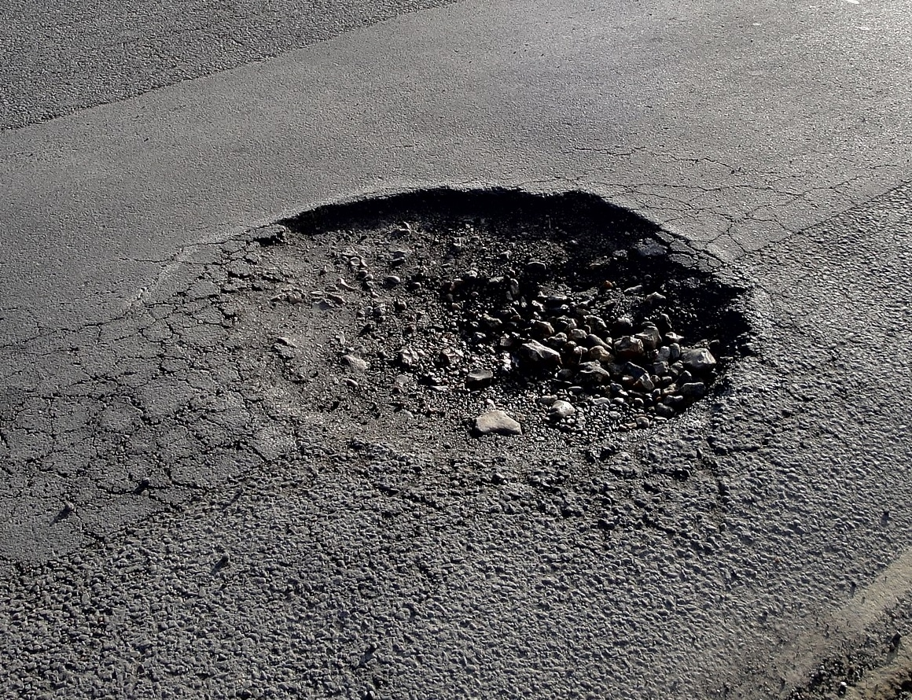

El problema

En la comunidad y zonas urbanas hay un problema constante de congestionamiento vial y deterioro de las calles por baches. Esto causa retrasos, mayor consumo de combustible, estrés, daños a los vehículos y accidentes.
Pregunta de investigación: ¿Cómo puede una aplicación móvil ayudar a reducir el congestionamiento vial y evitar calles en mal estado mediante reportes de baches y rutas inteligentes?
Objetivos
Objetivo general: Desarrollar una aplicación móvil que permita consultar el tráfico en tiempo real y localizar calles con baches mediante reportes ciudadanos y rutas inteligentes.
Comparación con otras aplicaciones
| Característica | Google Maps | Waze | Moovit | VIANOVA |
|---|---|---|---|---|
| Tráfico en tiempo real | Sí | Sí | Limitado | Sí |
| Rutas alternativas | Sí | Sí | Transporte público | Sí |
| Reporte de baches | No | Limitado | No | Sí |
| Participación ciudadana | Limitada | Alta | Mínima | Alta |
Reporta un bache
Reportes enviados: 0
Alumna
- Contreras Maturino Brittany